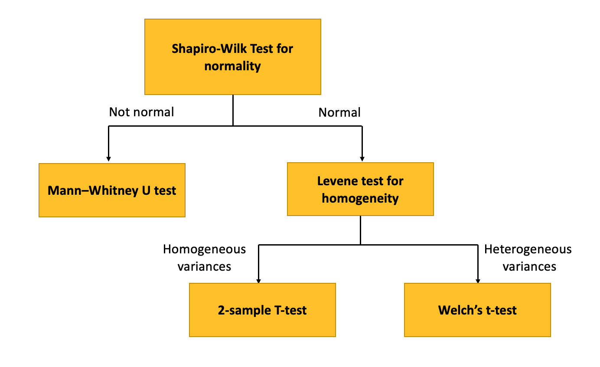
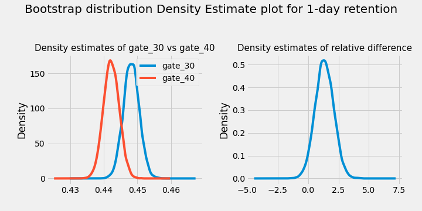
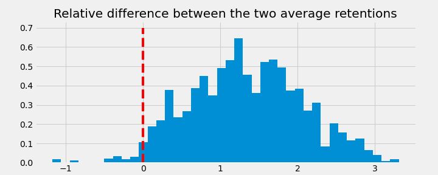

Mobile Game AB Testing: Cookie Cats
🚧 Under Construction 🚧
Introduction
Overview
Cookie Cats is a popular mobile puzzle game developed by Tactile Games. This is a classic game where you need to connect three pieces of puzzle of the same type to clear the board and score points.
As players move to higher level, they will see gates that ask them to either wait for a period of time, or make an in-app purchase to progress. In this project, I am interested in performing an A/B test to understand the effect of moving the first gate from level 30 to level 40 on player retention.
The Data
The dataset contains 90,189 players that installed the game while the A/B test took place. The features are as follows:
userid: player unique identificationversion: whether the player is placed in the control group (gate_30; the first gate is placed at level 30) or the test group (gate_40; the first gate is placed at level 40).sum_gamerounds: the number of game rounds played by the player during the first week after installationretention_1: 1-day retention of player after installationretention_7: 7-day retention of player after installation
Method
Exploratory Data Analysis

- There are 3,994 users who installed the game but never played. It is odd that around 20% of these users have retention_1 as TRUE. A data quality check is needed.
- Only 59.4% of all users reach Gate 30, and only 65.76% of all users reach Gate 40.
- We can see a kink at sum_gamerounds == 1. 5538 users only play 1 game.
This points to a significant churn problem. These are a few recommendations:
- Tactile Entertainment should understand why most people only play a few games. Maybe the game is too difficult or not as interesting as other games.
- Tactile Entertainment should explore avenues to retain users, such as unlocking features as certain gates or building a more compelling story.
Bootstrapping
While the difference in retention_1d and retention_7d between gate_30 and gate_40 is very small, it can make a big difference when we look at millions of players if the game is grow in the future.
I would like to understand whether the difference is significant. In this notebook, I will use bootstrapping: I will re-sample the dataset with replacement for 10,000 times, and calculate 1-day retention for those samples.
This will give me an idea of how confident I should be about the difference between gate_30 and gate_40 - the procedure will give us an idea of how uncertain the numbers are.
A/B Hypothesis Testing:
- Understanding business problem and the data
- Form a hypothesis and check assumptions
- Build a randomization strategy
- Set metrics
- Choose a sample size
- Collect the data
- Perform exploratory data analysis and process data
- Check normality and homogeneity
- Apply tests (Shapiro, Levene Test, T-Test, Welch Test, Mann Whitney U Test)
- Evaluate the results on the metrics
- Make inferences
- Make recommendations
Hypothesis Testing Procedure:

Bayesian A/B Testing
Results:
Bootstrapping:
After bootstrapping, it seems like moving from gate_30 to gate_40 actually lower 1-day and 7-day retention.
The probability that 1-day retention is greater when the gate is at level 30 is 96.23%.

The probability that 7-day retention is greater when the gate is at level 30 is 99.9%.

A/B Hypothesis Testing:
For both 1-day and 7-day retention:
Shapiro-Wilk Test for normality
H_0: The null hypothesis for this test is that the data are normally distributed.H_A: The alternative hypothesis is that the data is not normally distributed.
If the chosen alpha level is 0.05 and the p-value is less than 0.05, then the null hypothesis that the data are normally distributed is rejected. If the p-value is greater than 0.05, then the null hypothesis is not rejected.
In our case, both the control group (gate_30) and the treatment group (gate_40) are not normally distributed as the p-values are both less than 0.05. Therefore, we will go with the Mann–Whitney instead of a standard t-test.
The Mann–Whitney U test (also called the Mann–Whitney–Wilcoxon (MWW), Wilcoxon rank-sum test, or Wilcoxon–Mann–Whitney test) is a nonparametric test:
H_0: null hypothesis that, for randomly selected values X and Y from two populations, the probability of X being greater than Y is equal to the probability of Y being greater than X.H_A: alternative hypothesis that, for randomly selected values X and Y from two populations, the probability of X being greater than Y is not equal to the probability of Y being greater than X.
In our case, p-value < 0.05, we reject the null hypothesis and the difference between the control and the treatment group is statistically significance.
Bayesian A/B Hypothesis Testing:
From the above observations, we have a 95.7% confidence that the retention for Gate 30 is greater than 40 for 1 day.

From the above observations, we have a 99.9% confidence that the retention for Gate 30 is greater than 40 for 7 days.

As a final conclusion we observed that placing the gate at Level 30 brought greater retention for both the 1 and 7 days metrics. For decision making in a real problem, other variables would need to be analyzed, however, if the decision needed to be taken taking into account only those studied, the Gate 30 maintenance would be the most adequate.